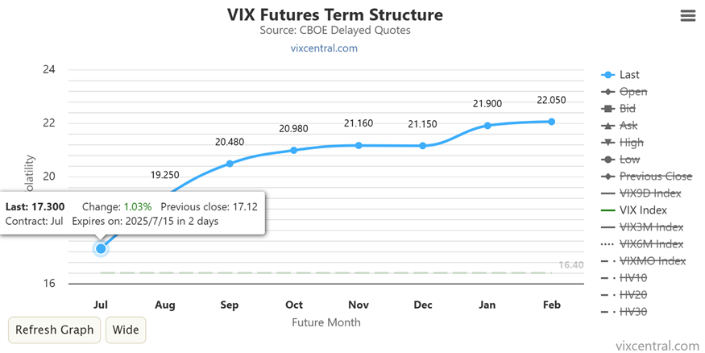
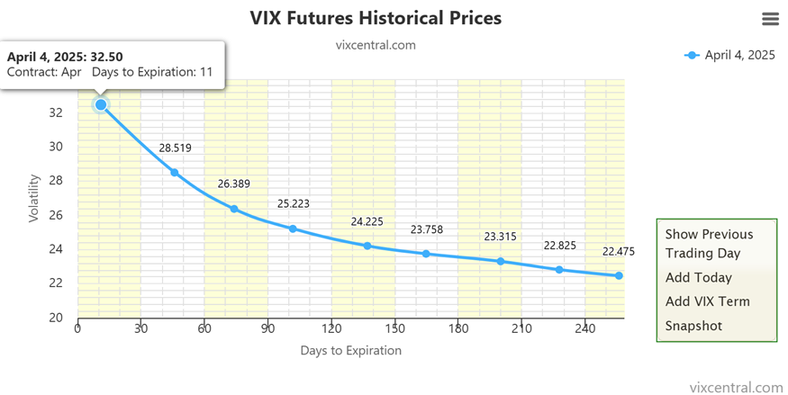
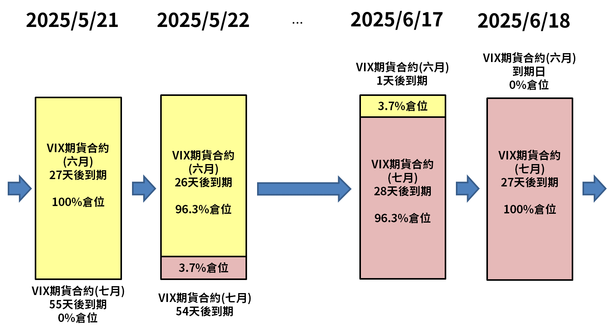

上一章我們認識了 VIX 指數：它衡量市場對未來 30 天波動的預期，是觀察市場恐慌程度的溫度計。但有一個關鍵限制：VIX 指數本身無法直接交易。想參與波動率投資，就必須透過它的衍生商品。這一章要談的，就是這些商品的源頭：VIX 期貨，以及建立在期貨之上的各式 ETP。 本章會依序說明三件事：VIX 期貨的基本概念、VIX 期貨的期限結構，以及 VIX 相關 ETP 與其追蹤指數的運作機制。
一、何為VIX期貨？
VIX 期貨是以未來
VIX 指數為標的的現金結算期貨，在 CBOE 交易，讓投資人能針對市場波動性進行投資或避險。由於 VIX 指數本身無法被交易，期貨提供了交易「對未來 VIX 預期」的機會。
每一檔期貨的價格，反映的是市場對特定月份 VIX 指數的預期，因此通常和即時的 VIX 不同，也常出現期貨與現貨之間的價差。把不同到期月份的 VIX 期貨價格連成一條線，就是 VIX 期貨期限結構（VIX futures term structure）。
想觀察這條曲線，vixcentral.com是非常重要的網站，也是波動率交易者必備的數據來源：上面可以查到各月份 VIX 期貨的價格、到期日與歷史數據。

圖 1 VIX 期貨期限結構，2025/7/13（資料來源：vixcentral.com）
二、VIX 期貨期限結構：正價差與逆價差
VIX 期貨的期現貨價差，也會體現在期限結構上，並且和上一章的 VIX 現貨期限結構一樣，在一定程度上反映當前的市場氛圍：
•
正價差（Contango）：遠月期貨價格大於近月期貨價格。
•
逆價差（Backwardation）：近月期貨價格大於遠月期貨價格。
在平穩的股市多頭時期，VIX 期貨期限結構長期處於正價差。原因是市場對遠月的不確定性、預期波動更大：未來十個月內發生利空事件的機率，本來就比未來一個月內發生的機率更大。相反地，在市場恐慌時期，市場預期的是不確定性將逐漸消退，容易出現逆價差。

圖 2 2025/4/4 的 VIX 期貨期限結構（資料來源：vixcentral.com）
2025年 4 月初川普對等關稅風暴血洗全球股市，VIX 期貨期限結構呈現嚴重逆價差。
三、先搞懂：ETP、ETF、ETN 有什麼不同？
在介紹 VIX 相關商品之前，先釐清三個常被混用的名詞，因為它們的差異，關係到你承擔的風險。
•
ETP（Exchange-Traded Product，交易所交易產品）：這是一個總稱，泛指所有在交易所上市交易、價格隨市場波動的投資商品。可以把它想成一個大分類，ETF 和 ETN 都是它底下的子類型。
•
ETF（Exchange-Traded Fund，交易所交易基金）：一種開放式基金，追蹤指數（如 S&P 500、台灣加權指數）、債券、商品、產業等，並在交易所上市交易。特點是有資產擔保，實際持有標的資產（股票、債券），流動性高，可以像股票一樣買賣。它有資產淨值（NAV），與市場價格大致同步，但也可能出現追蹤誤差。常見例子包含 0050、SPY。
•
ETN（Exchange-Traded Note，交易所交易票據）：由金融機構（通常是銀行）發行的無擔保債務票據，追蹤某項指數或標的資產的表現。它沒有實際持有標的資產，只承諾依照標的表現給你回報，因此有發行銀行的信用風險：若銀行倒閉，可能拿不回本金。由於是約定還款，追蹤效果精準、沒有追蹤誤差。ETN 常見於難以實體持有的標的，例如特定大宗商品指數或波動率指數（如 VIX）。
四、VIX 相關 ETP 一覽
VIX 指數本身無法被交易，所以相關商品都是以 VIX 期貨間接投資。這些 ETP 的差異主要有三項：與 VIX 的正反向、槓桿倍數，以及不同月份的持倉組合。目前市面上的 VIX 相關 ETP，基本上會持有兩個不同月份的 VIX 期貨，並隨著接近到期日（Expiration day），每日再平衡（Daily rebalance）不同月份期貨的部位大小。
做多 VIX 相關 ETP（相當於看空股市）
|
代碼 |
全名 |
類型 |
發行商 |
槓桿 |
追蹤指數／持有期貨 |
|
UVIX |
2x Long VIX Short-Term Futures ETF |
ETF |
Volatility Shares |
+2x |
短期指數（第
1～2
月） |
|
UVXY |
ProShares Ultra VIX Short-Term Futures ETF |
ETF |
ProShares |
+1.5x |
短期指數（第
1～2
月） |
|
VXX |
iPath Series B S&P 500 VIX Short-Term Futures ETN |
ETN |
Barclays |
+1x |
短期指數（第
1～2
月） |
|
VXM |
1x Long VIX Mid-Term Futures ETF |
ETF |
Volatility Shares |
+1x |
中期指數（第
4～7
月） |
|
VXZ |
iPath Series B S&P 500 VIX Mid-Term Futures ETN |
ETN |
Barclays |
+1x |
中期指數（第
4～7
月） |
做空 VIX 相關
ETP（相當於看多股市）
|
代碼 |
全名 |
類型 |
發行商 |
槓桿 |
追蹤指數／持有期貨 |
|
SVIX |
-1x Short VIX Short-Term Futures ETF |
ETF |
Volatility Shares |
-1x |
短期指數（第
1～2
月） |
|
SVXY |
ProShares Short VIX Short-Term Futures ETF |
ETF |
ProShares |
-0.5x |
短期指數（第
1～2
月） |
|
ZIVB |
-1x Short VIX Mid-Term Futures ETF |
ETF |
Volatility Shares |
-1x |
中期指數（第
4～7
月） |
短期指數的追蹤標的為 S&P 500 VIX Short-Term Futures Index，中期指數則為 S&P 500 VIX Mid-Term Futures Index。
五、追蹤指數的運作機制：以 VIX 短期期貨指數為例
從上面的比較表可以看出，這些 ETP 要麼以 VIX 短期期貨指數，要麼以 VIX 中期期貨指數為追蹤標的，再提供指數正向或反向、不同槓桿倍數的表現。這裡以 VIX 短期期貨指數（S&P 500 VIX Short-Term
Futures Index）為例說明。
VIX 短期期貨指數追蹤前兩個月的 VIX 期貨合約價格，並且每日再平衡，代表的是「投資一組隨時間前移的短期期貨組合」。它持有最近兩個到期的 VIX 期貨合約，並依距離到期日的天數，以線性權重分配：到期日越近的合約，權重越高。
下表是這個指數從
2025/5/21 到 2025/6/18 的持倉變化：

可以看到，近月（六月）合約的權重逐日下降，遠月（七月）合約的權重逐日上升；當六月合約到期後，持倉就 100% 移轉到七月合約，之後再與下一個月份滾動。這個過程每天都在發生，也就是「隨時間前移」的意思。
六、ETP 的每日再平衡：以 SVXY 為例
接著用 SVXY
說明 ETP 本身如何運作。SVXY 的投資目標是：每個交易日，提供與 VIX 短期期貨指數日報酬「反向 0.5 倍」的表現。為了讓隔天起始的曝險，能再次準確反映 -0.5 倍的目標，SVXY
每天都會根據標的資產的變動調整持倉比例。
舉例來說，假設 SVXY 今日淨資產為
1,000 萬美元，為了達成 -0.5x 的日報酬目標，必須持有相當於 500 萬美元曝險的
VIX 短期期貨空單部位。
•
指數上漲 10%：SVXY
應虧損約 5%，淨資產變為 950 萬美元，空單部位的損失使曝險仍是 500 萬美元，曝險比例升至
52.6%。為了回到 -0.5 倍（應為 475 萬美元空單），SVXY
需要買回部分空單，減少曝險。
• 指數下跌 10%：SVXY 應獲利約 5%，淨資產變為 1,050 萬美元，空單部位獲利使曝險仍是 500 萬美元，曝險比例降至 47.6%。為了回到 -0.5 倍（應為 525 萬美元空單），SVXY 需要擴大空單部位，增加曝險。
這就是 ETP 的每日再平衡：透過每天調整部位，讓曝險符合目標槓桿比率。
下一章預告
了解了 VIX 指數、VIX 期貨，以及
VIX 期貨相關 ETP 的基本概念之後，下一章我們就來看看，這個和一般股市迥異的金融交易生態，能為我們帶來什麼樣的投資機會與挑戰。